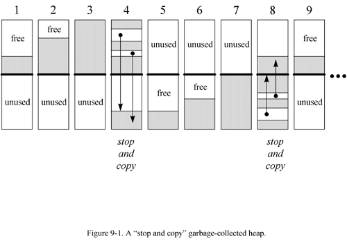
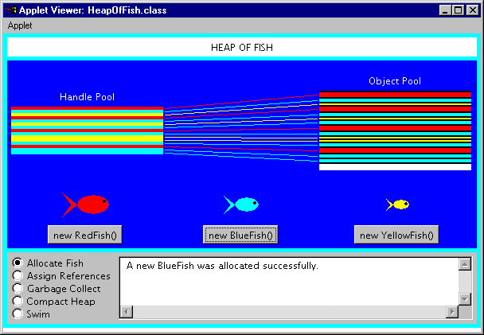
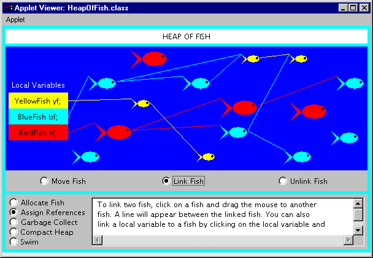
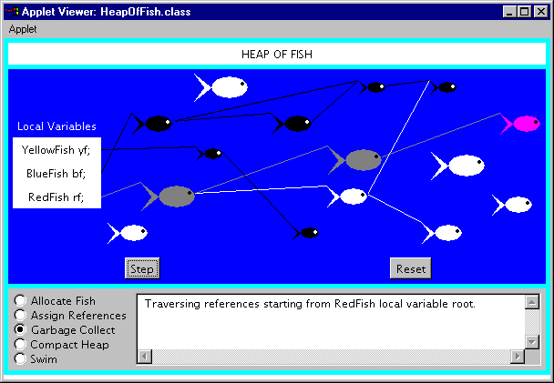
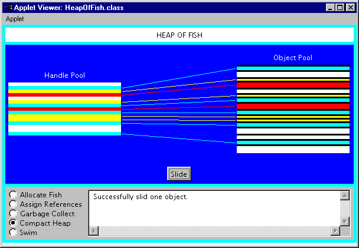

Any use of this Beta Book is subject to the rules stated in the Terms of Use.
| © 1997 The McGraw-Hill Companies, Inc. All rights reserved. Any use of this Beta Book is subject to the rules stated in the Terms of Use. | |
The Java Virtual Machine's heap stores all objects created by a running Java application. Objects are created by the new, newarray, anewarray, and multianewarray instructions, but never freed explicitly by the code. Garbage collection is the process of automatically freeing objects that are no longer referenced by the program.
This chapter does not describe an official Java garbage-collected heap, because none exists. As mentioned in earlier chapters, the Java Virtual Machine specification does not require any particular garbage collection technique. It doesnít even require garbage collection at all. But until infinite memory is invented, most Java Virtual Machine implementations will likely come with garbage-collected heaps. This chapter describes various garbage collection techniques and explains how garbage collection works in Java Virtual Machines.
Accompanying this chapter on the CD-ROM is an applet that interactively illustrates the material presented in the chapter. The applet, named Heap of Fish, simulates a garbage-collected heap in a Java Virtual Machine. The simulation--which demonstrates a compacting, mark-and-sweep collector--allows you to interact with the heap as if you were a Java program: you can allocate objects and assign references to variables. The simulation also allows you to interact with the heap as if you were the Java Virtual Machine: you can drive the processes of garbage collection and heap compaction. At the end of this chapter, you will find a description of this applet and instructions on how to use it.
Why Garbage Collection?
The name "garbage collection" implies that objects no longer needed by the program are "garbage" and can be thrown away. A more accurate and up-to-date metaphor might be "memory recycling." When an object is no longer referenced by the program, the heap space it occupies can be recycled so that the space is made available for subsequent new objects. The garbage collector must somehow determine which objects are no longer referenced by the program and make available the heap space occupied by such unreferenced objects. In the process of freeing unreferenced objects, the garbage collector must run any finalizers of objects being freed.
In addition to freeing unreferenced objects, a garbage collector may also combat heap fragmentation. Heap fragmentation occurs through the course of normal program execution. New objects are allocated, and unreferenced objects are freed such that free portions of heap memory are left in between portions occupied by live objects. Requests to allocate new objects may have to be filled by extending the size of the heap even though there is enough total unused space in the existing heap. This will happen if there is not enough contiguous free heap space available into which the new object will fit. On a virtual memory system, the extra paging (or swapping) required to service an ever growing heap can degrade the performance of the executing program. On an embedded system with low memory, fragmentation could cause the virtual machine to "run out of memory" unnecessarily.
Garbage collection relieves you from the burden of freeing allocated memory. Knowing when to explicitly free allocated memory can be very tricky. Giving this job to the Java Virtual Machine has several advantages. First, it can make you more productive. When programming in non-garbage-collected languages you can spend many late hours (or days or weeks) chasing down an elusive memory problem. When programming in Java you can use that time more advantageously by getting ahead of schedule or simply going home to have a life.
A second advantage of garbage collection is that it helps ensure program integrity. Garbage collection is an important part of Java's security strategy. Java programmers are unable to accidentally (or purposely) crash the Java Virtual Machine by incorrectly freeing memory.
A potential disadvantage of a garbage-collected heap is that it adds an overhead that can affect program performance. The Java Virtual Machine has to keep track of which objects are being referenced by the executing program, and finalize and free unreferenced objects on the fly. This activity will likely require more CPU time than would have been required if the program explicitly freed unnecessary memory. In addition, programmers in a garbage-collected environment have less control over the scheduling of CPU time devoted to freeing objects that are no longer needed.
Garbage Collection Algorithms
Any garbage collection algorithm must do two basic things. First, it must detect garbage objects. Second, it must reclaim the heap space used by the garbage objects and make the space available again to the program.
Garbage detection is ordinarily accomplished by defining a set of roots and determining reachability from the roots. An object is reachable if there is some path of references from the roots by which the executing program can access the object. The roots are always accessible to the program. Any objects that are reachable from the roots are considered "live." Objects that are not reachable are considered garbage, because they can no longer affect the future course of program execution.
The root set in a Java Virtual Machine is implementation dependent, but would always include any object references in the local variables and operand stack of any stack frame and any object references in any class variables. Another source of roots are any object references, such as strings, in the constant pool of loaded classes. The constant pool of a loaded class may refer to strings stored on the heap, such as the class name, superclass name, superinterface names, field names, field signatures, method names, and method signatures. Another source of roots may be any object references that were passed to native methods that either havenít been "released" by the native method. (Depending upon the native method interface, a native method may be able to release references by simply returning, by explicitly invoking a call back that releases passed references, or some combination of both.) Another potential source of roots is any part of the Java Virtual Machineís runtime data areas that are allocated from the garbage-collected heap. For example, the class data in the method area itself could be placed on the garbage-collected heap in some implementations, allowing the same garbage collection algorithm that frees objects to detect and unload unreferenced classes.
Any object referred to by a root is reachable and is therefore a live object. Additionally, any objects referred to by a live object are also reachable. The program is able to access any reachable objects, so these objects must remain on the heap. Any objects that are not reachable can be garbage collected because there is no way for the program to access them.
The Java Virtual Machine can be implemented such that the garbage collector knows the difference between a genuine object reference and a primitive type (for example, an int) that appears to be a valid object reference. (For example, an int that would point to an object on the heap if it were interpreted as a native pointer.) Some garbage collectors, however, may choose not to distinguish between genuine object references and look-alikes. Such garbage collectors are called conservative because they may not always free every unreferenced object. Sometimes a garbage object will be wrongly considered to be live by a conservative collector, because an object reference look-alike referred to it. Conservative collectors trade off an increase in garbage collection speed for occasionally not freeing some actual garbage.
Two basic approaches to distinguishing live objects from garbage are reference counting and tracing. Reference counting garbage collectors distinguish live objects from garbage objects by keeping a count for each object on the heap. The count keeps track of the number of references to that object. Tracing garbage collectors actually trace out the graph of references starting with the root nodes. Objects that are encountered during the trace are marked in some way. After the trace is complete, unmarked objects are known to be unreachable and can be garbage collected.
Reference Counting Collectors
Reference counting was an early garbage collection strategy. In this approach, a reference count is maintained for each object on the heap. When an object is first created and a reference to it is assigned to a variable, the objectís reference count is set to one. When any other variable is assigned a reference to that object, the object's count is incremented. When a reference to an object goes out of scope or is assigned a new value, the object's count is decremented. Any object with a reference count of zero can be garbage collected. When an object is garbage collected, any objects that it refers to have their reference counts decremented. In this way the garbage collection of one object may lead to the subsequent garbage collection of other objects.
An advantage of this approach is that a reference counting collector can run in small chunks of time closely interwoven with the execution of the program. This characteristic makes it particularly suitable for real-time environments where the program can't be interrupted for very long. A disadvantage is that reference counting does not detect cycles: two or more objects that refer to one another. An example of a cycle is a parent object that has a reference to a child object that has a reference back to the parent. These objects will never have a reference count of zero even though they may be unreachable by the roots of the executing program. Another disadvantage of reference counting is the overhead of incrementing and decrementing the reference count each time.
Because of the disadvantages inherent in the reference counting approach, this technique is currently out of favor. It is more likely that the Java Virtual Machines you encounter in the real world will use a tracing algorithm in their garbage-collected heaps.
Tracing Collectors
Tracing garbage collectors trace out the graph of object references starting with the root nodes. Objects that are encountered during the trace are marked in some way. Marking is generally done by either setting flags in the objects themselves or by setting flags in a separate bitmap. After the trace is complete, unmarked objects are known to be unreachable and can be garbage collected.
The basic tracing algorithm is called "mark and sweep." This name refers to the two phases of the garbage collection process. In the mark phase, the garbage collector traverses the tree of references and marks each object it encounters. In the sweep phase, unmarked objects are freed, and the resulting memory is made available to the executing program. In the Java Virtual Machine, the sweep phase must include finalization of objects.
Compacting Collectors
Garbage collectors of Java Virtual Machines will likely have a strategy to combat heap fragmentation. Two strategies commonly used by mark and sweep collectors are compacting and copying. Both of these approaches move objects on the fly to reduce heap fragmentation. Compacting collectors slide live objects over free memory space toward one end of the heap. In the process the other end of the heap becomes one large contiguous free area. All references to the moved objects are updated to refer to the new location.
Updating references to moved objects is sometimes made simpler by adding a level of indirection to object references. Instead of referring directly to objects on the heap, object references refer to a table of object handles. The object handles refer to the actual objects on the heap. When an object is moved, only the object handle must be updated with the new location. All references to the object in the executing program will still refer to the updated handle, which did not move. While this approach simplifies the job of heap defragmentation, it adds a performance overhead to every object access.
Copying Collectors
Copying garbage collectors move all live objects to a new area. As the objects are moved to the new area, they are placed side by side, thus eliminating any free space that may have separated them in the old area. The old area is then known to be all free space. The advantage of this approach is that objects can be copied as they are discovered by the traversal from the root nodes. There are no separate mark and sweep phases. Objects are copied to the new area on the fly, and forwarding pointers are left in their old locations. The forwarding pointers allow the garbage collector to detect references to objects that have already been moved. The garbage collector can then assign the value of the forwarding pointer to the references so they point to the objectís new location.
A common copying collector algorithm is called "stop and copy." In this scheme, the heap is divided into two regions. Only one of the two regions is used at any time. Objects are allocated from one of the regions until all the space in that region has been exhausted. At that point program execution is stopped and the heap is traversed. Live objects are copied to the other region as they are encountered by the traversal. When the stop and copy procedure is finished, program execution resumes. Memory will be allocated from the new heap region until it too runs out of space. At that point the program will once again be stopped. The heap will be traversed and live objects will be copied back to the original region. The cost associated with this approach is that twice as much memory is needed for a given amount of heap space because only half of the available memory is used at any time.
You can see a graphical depiction of a garbage-collected heap that uses a stop and copy algorithm in Figure 9-1. This figure shows nine snapshots of the heap over time. In the first snapshot, the lower half of the heap is unused space. The upper half of the heap is partially filled by objects. That portion of the heap that contains objects is painted with diagonal gray lines. The second snapshot shows that the top half of the heap is gradually being filled up with objects, until it becomes full as shown in the third snapshot.
At that point, the garbage collector stops the program and traces out the graph of live objects starting with the root nodes. It copies each live object it encounters down to the bottom half of the heap, placing each object next to the previously copied object. This process is shown in snapshot four.
Snapshot five shows the heap after the garbage collection has finished. Now the top half of the heap is unused, and the bottom half is partially filled with live objects. The sixth snapshot shows the bottom half is now becoming gradually filled with objects, until it too becomes full in snapshot seven.
Once again, the garbage collector stops the program and traces out the graph of live objects. This time, it copies each live object it encounters up to the top half of the heap, as shown in snapshot eight. Snapshot nine shows the result of the garbage collection: the bottom half is once again unused space and the top half is partially filled with objects. This process repeats again and again as the program executes.

Generational Collectors
One disadvantage of simple stop and copy collectors is that all live objects must be copied at every collection. This facet of copying algorithms can be improved upon by taking into account two facts that have been empirically observed in most programs in a variety of languages:
A major source of inefficiency in simple copying collectors is that they spend much of their time copying the same long-lived objects again and again.
Generational collectors address this inefficiency by grouping objects by age and garbage collecting younger objects more often than older objects. In this approach, the heap is divided into two or more sub-heaps, each of which serves one "generation" of objects. The youngest generation is garbage collected most often. As most objects are short-lived, only a small percentage of young objects are likely to survive their first collection. Once an object has survived a few garbage collections as a member of the youngest generation, the object is promoted to the next generation: it is moved to another sub-heap. Each progressively older generation is garbage collected less often than the next younger generation. As objects "mature" (survive multiple garbage collections) in their current generation, they are moved to the next older generation.
The generational collection technique can be applied to mark and sweep algorithms as well as copying algorithms. In either case, dividing the heap into generations of objects can help improve the efficiency of the basic underlying garbage collection algorithm.
Adaptive Collectors
An adaptive garbage collection algorithm takes advantage of the fact that some garbage collection algorithms work better in some situations, while others work better in other situations. An adaptive algorithm monitors the current situation on the heap and adjusts its garbage collection technique accordingly. It may tweak the parameters of a single garbage collection algorithm as the program runs. It may switch from one algorithm to another on the fly. Or it may divide the heap into sub-heaps and use different algorithms on different sub-heaps simultaneously.
With an adaptive approach, designers of Java Virtual Machine implementations need not choose just one garbage collection technique. They can employ many techniques, giving each algorithm work for which it is best suited.
Finalization
In Java, an object may have a finalizer: a method that the garbage collector must run on the object prior to freeing the object. The potential existence of finalizers complicates the job of any garbage collector in a Java Virtual Machine.
To add a finalizer to a class, you simply declare a method in that class as follows:
begin
// On CD-ROM in file gc/ex2/Example2.javaclass Example2 {
protected void finalize() throws Throwable {
//...
super.finalize();
}
//...
}
end
A garbage collector must examine all objects it has discovered to be unreferenced to see if any include a finalize() method.
Because of finalizers, a garbage collector in the Java Virtual Machine must perform some extra steps each time it garbage collects. First, the garbage collector must in some way detect unreferenced objects (call this Pass I). Then, it must examine the unreferenced objects it has detected to see if any declare a finalizer. If it has enough time, it may at this point in the garbage collection process finalize all unreference objects that declare finalizers.
After executing all finalizers, the garbage collector must once again detect unreferenced objects starting with the root nodes (call this Pass II). This step is needed because finalizers can "resurrect" unreferenced objects and make them referenced again. Finally, the garbage collector can free all objects that were found to be unreferenced in both Passes I and II.
To reduce the time it takes to free up some memory, a garbage collector can optionally insert a step between the detection of unreferenced objects that have finalizers and the running of those finalizers. Once the garbage collector has performed Pass I and found the unreferenced objects that need to be finalized, it can run a miniature trace starting not with the root nodes but with the objects waiting to be finalized. Any objects that are (1) not reachable from the root nodes (those detected during Pass I) and (2) not reachable from the objects waiting to be finalized cannot be resurrected by any finalizer. These objects can be freed immediately.
If an object with a finalizer becomes unreferenced, and its finalizer is run, the garbage collector must in some way ensure that it never runs the finalizer on that object again. If that object is resurrected by its own finalizer or some other objectís finalizer and later becomes unreferenced again, the garbage collector must treat it as an object that has no finalizer.
As you program in Java, you must keep in mind that it is the garbage collector that runs finalizers on objects. Because it is not generally possible to predict exactly when unreferenced objects will be garbage collected, it is not possible to predict when object finalizers will be run. As mentioned in Chapter 2, "Platform Independence," you should avoid writing programs for which correctness depends upon the timely finalization of objects. For example, if a finalizer of an unreferenced object releases a resource that is needed again later by the program, the resource will not be made available until after the garbage collector has run the object finalizer. If the program needs the resource before the garbage collector has gotten around to finalizing the unreferenced object, the program is out of luck.
Heap of Fish: A Simulation
The Heap of Fish applet, shown in Figures 9-2 through 9-5, demonstrates a compacting, mark and sweep, garbage-collected heap. To facilitate compaction, this heap uses indirect handles to objects instead of direct references. It is called Heap of Fish because the only type of objects stored on the heap for this demonstration are fish objects, defined as follows:
insert
// On CD-ROM in file gc/ex1/YellowFish.javaclass YellowFish {
YellowFish myFriend;
}
// On CD-ROM in file gc/ex1/BlueFish.java
class BlueFish {
BlueFish myFriend;
YellowFish myLunch;
}
// On CD-ROM in file gc/ex1/RedFish.java
class RedFish {
RedFish myFriend;
BlueFish myLunch;
YellowFish mySnack;
}
end
As you can see, there are three classes of fish: red, yellow, and blue. The red fish is the largest as it has three instance variables. The yellow fish, with only one instance variable, is the smallest fish. The blue fish has two instance variables and is therefore medium-sized.
The instance variables of fish objects are references to other fish objects. BlueFish.myLunch, for example, is a reference to a YellowFish object. In this implementation of a garbage-collected heap, a reference to an object occupies four bytes. Therefore, the size of the instance data of a RedFish object is twelve bytes, a BlueFish object is eight bytes, and a YellowFish object is four bytes.
Heap of Fish has five modes, which can be selected via radio buttons at the bottom left of the applet. When the applet starts it is in swim mode. Swim mode is just a gratuitous animation, vaguely reminiscent of the familiar image of a big fish about to eat a medium-sized fish, which is about to eat a small fish. The other four modes--allocate fish, assign references, garbage collect, and compact heap--allow you to interact with the heap. In the allocate fish mode, you can instantiate new fish objects. In the assign references mode, you can build a network of local variables and fish that refer to other fish. In garbage collect mode, a mark and sweep operation will free any unreferenced fish. The compact heap mode allows you to slide heap objects so that they are side by side at one end of the heap, leaving all free memory as one large contiguous block at the other end of the heap.
Allocate Fish
The allocate fish mode, shown in Figure 9-2, allows you to allocate new fish objects on the heap. In this mode you can see the two parts that make up the heap: the object pool and handle pool. The object pool is a contiguous block of memory from which space is taken for new objects. It is structured as a series of memory blocks. Each memory block has a four-byte header that indicates the length of the memory block and whether or not it is free. The headers are shown in the applet as black horizontal lines in the object pool.

Figure 9-2. The allocate fish mode of the Heap of Fish applet.
The object pool in Heap of Fish is implemented as an array of ints. The first header is always at objectPool[0]. The object pool's series of memory blocks can be traversed by hopping from header to header. Each header gives the length of its memory block, which also reveals where the next header is going to be. The header of the next memory block will be the first int immediately following the current memory block.
When a new object is allocated, the object pool is traversed until a memory block is encountered with enough space to accommodate the new object. Allocated objects in the object pool are shown as colored bars. YellowFish objects are shown in yellow, BlueFish in blue, and in red. Free memory blocks, those that currently contain no fish, are shown in white.
The handle pool in Heap of Fish is implemented as an array of objects of a class named ObjectHandle. An ObjectHandle contains information about an object, including the vital index into the object pool array. The object pool index functions as a reference to the objectís instance data in the object pool. The ObjectHandle also reveals information about the class of the fish object. As mentioned in Chapter 5, "The Java Virtual Machine," every object on the heap must in some way be associated with its class information stored in the method area. In Heap of Fish, the ObjectHandle associates each allocated object with information such as its class--whether it is a RedFish, BlueFish, or YellowFish--and some data used in displaying the fish in the applet user interface.
The handle pool exists to make it easier to defragment the object pool through compaction. References to objects, which can be stored in local variables of a stack or the instance variables of other objects, are not direct indexes into the object pool array. They are instead indexes into the handle pool array. When objects in the object pool are moved for compaction, only the corresponding ObjectHandle must be updated with the object's new object pool array index.
Each handle in the handle pool that refers to a fish object is shown as a horizontal bar painted the same color as the fish to which it refers. A line connects each handle to its fish instance variables in the object pool. Those handles that are not currently in use are drawn in white.
Assign References
The assign references mode, shown in Figure 9-3, allows you to build a network of references between local variables and allocated fish objects. A reference is merely a local or instance variable that contains a valid object reference. There are three local variables which serve as the roots of garbage collection, one for each class of fish. If you do not link any fish to local variables, then all fish will be considered unreachable and freed by the garbage collector.

Figure 9-3. The assign references mode of the Heap of Fish applet.
The assign references mode has three sub-modes: move fish, link fish, and unlink fish. You can select the sub-mode via radio buttons at the bottom of the canvas upon which the fish appear. In move fish mode, you can click on a fish and drag it to a new position. You might want to do this to make your links more visible or just because you feel like rearranging fish in the sea.
In link fish mode, you can click on a fish or local variable and drag a link to another fish. The fish or local variable you initially drag from will be assigned a reference to the fish you ultimately drop upon. A line will be shown connecting the two items. A line connecting two fish will be drawn between the nose of the fish with the reference to the tail of the referenced fish.
Class YellowFish has only one instance variable, myFriend, which is a reference to a YellowFish object. Therefore, a yellow fish can only be linked to one other yellow fish. When you link two yellow fish, the myFriend variable of the "dragged from" fish will be assigned the reference to the "dropped upon" fish. If this action were implemented in Java code, it might look like:
insert
// Fish are allocated somewhere
YellowFish draggedFromFish = new YellowFish();
YellowFish droppedUponFish = new YellowFish();
// Sometime later the assignment takes place
draggedFromFish.myFriend = droppedUponFish;
end
Class BlueFish has two instance variables, BlueFish myFriend and YellowFish myLunch. Therefore, a blue fish can be linked to one blue fish and one yellow fish. Class RedFish has three instance variables, RedFish myFriend, BlueFish myLunch, and YellowFish mySnack. Red fish can therefore link to one instance of each class of fish.
In unlink fish mode, you can disconnect fish by moving the cursor over the line connecting two fish. When the cursor is over the line, the line will turn black. If you click a black line the reference will be set to null and the line will disappear.
Garbage Collect
The garbage collect mode, shown in Figure 9-4, allows you to drive the mark and sweep algorithm. The Step button at the bottom of the canvas takes you through the garbage collection process one step at a time. You can reset the garbage collector at any time by clicking the Reset button. However, once the garbage collector has swept, the freed fish are gone forever. No manner of frantic clicking of the Reset button will bring them back.

Figure 9-4. The garbage collect mode of the Heap of Fish applet.
The garbage collection process is divided into a mark phase and a sweep phase. During the mark phase, the fish objects on the heap are traversed depth-first starting from the local variables. During the sweep phase, all unmarked fish objects are freed.
At the start of the mark phase, all local variables, fish, and links are shown in white. Each press of the Step button advances the depth-first traversal one more node. The current node of the traversal, either a local variable or a fish, is shown in magenta. As the garbage collector traverses down a branch, fish along the branch are changed from white to gray. Gray indicates the fish has been reached by the traversal, but there may yet be fish further down the branch that have not been reached. Once the terminal node of a branch is reached, the color of the terminal fish is changed to black and the traversal retreats back up the branch. Once all links below a fish have been marked black, that fish is marked black and the traversal returns back the way it came.
At the end of the mark phase, all reachable fish are colored black and any unreachable fish are colored white. The sweep phase then frees the memory occupied by the white fish.
Compact Heap
The compact heap mode, shown in Figure 9-5, allows you to move one object at a time to one end of the object pool. Each press of the Slide button will move one object. You can see that only the object instance data in the object pool moves; the handle in the handle pool does not move.

Figure 9-5. The compact heap mode of the Heap of Fish applet.
The Heap of Fish applet allows you to allocate new fish objects, link fish, garbage collect, and compact the heap. These activities can be done in any order as much as you please. By playing around with this applet you should be able to get a good idea how a mark and sweep garbage-collected heap works. There is some text at the bottom of the applet that should help you as you go along. Happy clicking.
On the CD-ROM
The CD-ROM contains the source code examples from this chapter in the gc directory. The Heap of Fish applet is contained in a web page on the CD-ROM in file applets/HeapOfFish.html. The source code for this applet is found alongside its class files, in the applets/HeapOfFish directory.
The Resources Page
For more information about the material presented in this chapter, visit the resources page: http://www.artima.com/insidejvm/gc.html.
COMPUTING MCGRAW-HILL | Beta Books | Contact Us | Order Information | Online Catalog
Computing McGraw-Hill is an imprint of the McGraw-Hill Professional Book Group.